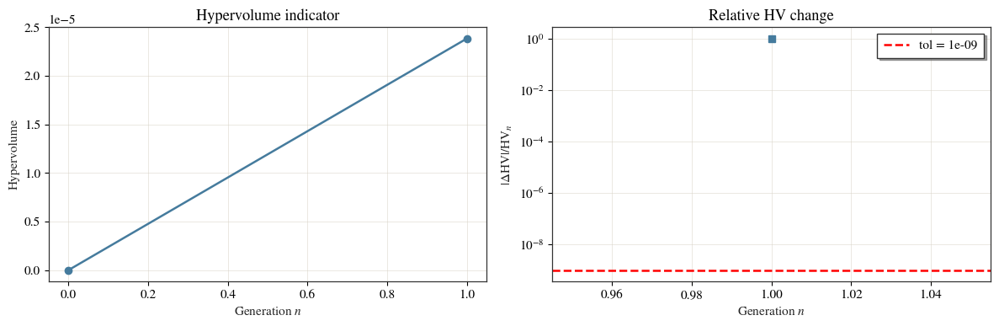
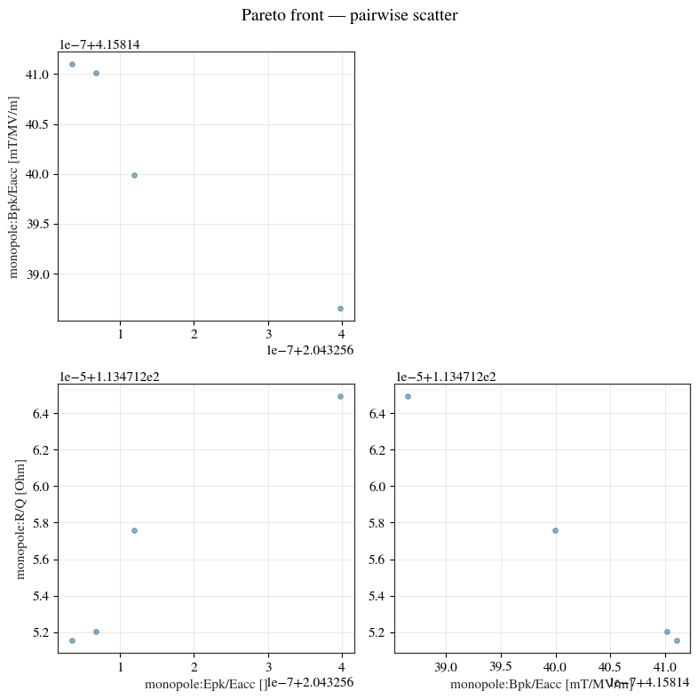
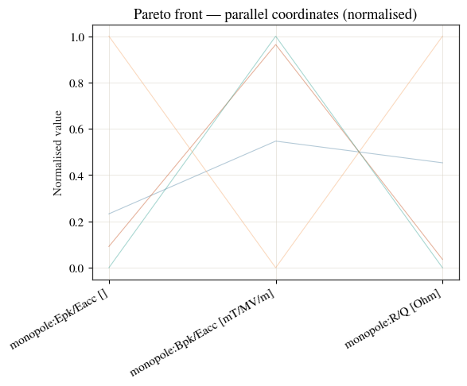
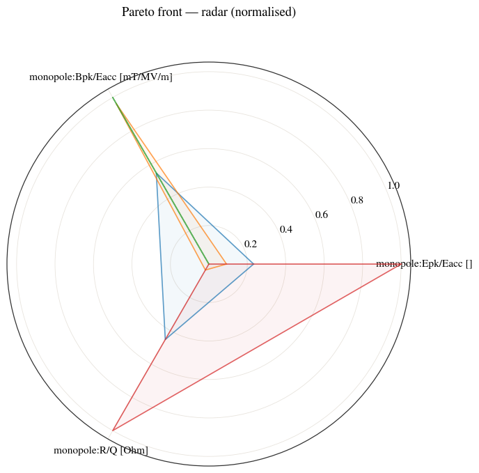
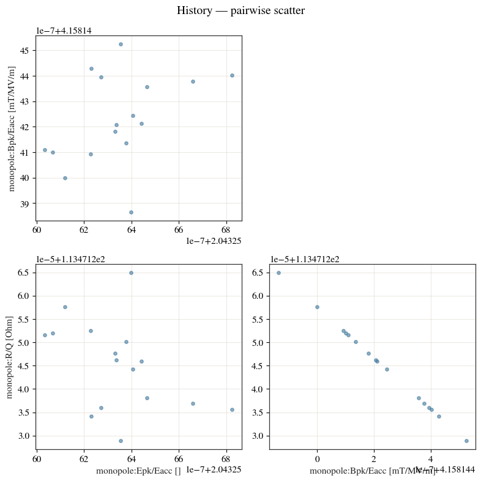
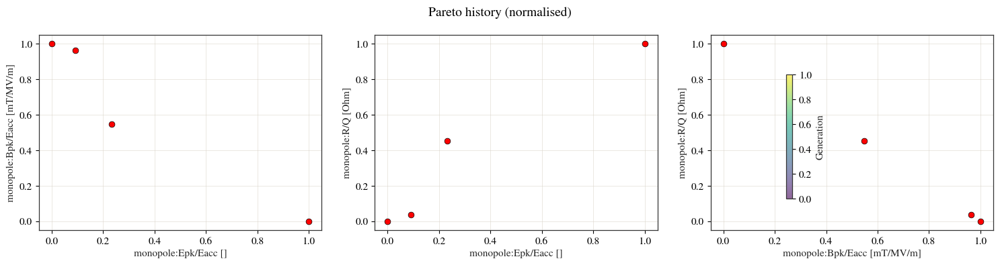

Reading and visualising an optimisation¶
The Pareto example runs a minimal two-objective search. Here we run a slightly larger three-objective optimisation and focus on the tools for making sense of the result: the several views of the Pareto front, the per-generation history, a convergence trace, and reading the result tables programmatically.
The three objectives — minimise peak surface electric field, minimise peak surface magnetic field, and maximise R/Q — genuinely conflict, so there is a real trade-off surface to explore. See the optimisation guide.
import os
import tempfile
import warnings
import matplotlib.pyplot as plt
from cavsim2d import Study, EllipticalCavity
from cavsim2d.utils.style import apply_style
warnings.filterwarnings('ignore') # quiet matplotlib tight_layout notices
apply_style()
1. A three-objective search¶
bounds are the swept design variables; Req is tuned separately (via
tune_config) to keep every candidate on 1300 MHz, so it is not a bound. Kept
small — a handful of candidates over two generations — so it runs in a few minutes.
cavs = Study(os.path.join(tempfile.mkdtemp(), 'opt3'))
mid = [42, 42, 12, 19, 35, 57.7, 103.353]
cavs.add_cavity([EllipticalCavity(1, mid, mid, mid, beampipe='none')], ['TESLA'])
config = {
'initial_points': 6, 'no_of_generation': 2, 'method': {'LHS': {'seed': 5}},
'bounds': {'A': [38, 48], 'B': [38, 48], 'a': [10, 14], 'b': [17, 21]},
'objectives': [['min', 'monopole:Epk/Eacc []'],
['min', 'monopole:Bpk/Eacc [mT/MV/m]'],
['max', 'monopole:R/Q [Ohm]']],
'tune_config': {'freqs': 1300.0, 'cell_type': {'mid-cell': 'Req'}, 'processes': 1,
'eigenmode_config': {'n_cells': 1, 'processes': 1,
'boundary_conditions': 'mm'}},
'mutation_factor': 4, 'crossover_factor': 4, 'elites_for_crossover': 2,
'chaos_factor': 2, 'weights': [1, 1, 1],
}
cavs.run_optimisation(config)
opt = cavs.optimisation
print(f'evaluated candidates: {len(opt.history)}')
print(f'Pareto-front size: {len(opt.pareto)}')
print(f'objectives: {opt.objective_vars}')
0%| | 0/2 [00:00<?, ?it/s]
50%|█████ | 1/2 [00:54<00:54, 54.54s/it]
100%|██████████| 2/2 [02:32<00:00, 80.22s/it]

evaluated candidates: 16
Pareto-front size: 4
objectives: ['monopole:Epk/Eacc []', 'monopole:Bpk/Eacc [mT/MV/m]', 'monopole:R/Q [Ohm]']
2. The Pareto front, several ways¶
With three objectives a single scatter plot cannot show every trade-off at once, so
the optimiser offers complementary views (kind=). The scatter matrix shows
every pair of objectives:
opt.plot_pareto(kind='scatter', normalise=False)

(<Figure size 800x800 with 4 Axes>,
array([[<Axes: ylabel='monopole:Bpk/Eacc [mT/MV/m]'>, <Axes: >],
[<Axes: xlabel='monopole:Epk/Eacc []', ylabel='monopole:R/Q [Ohm]'>,
<Axes: xlabel='monopole:Bpk/Eacc [mT/MV/m]'>]], dtype=object))
Parallel coordinates (pcp) draws each candidate as a line across all three
objective axes — crossing lines are the sign of a trade-off:
opt.plot_pareto(kind='pcp')

(<Figure size 600x500 with 1 Axes>,
<Axes: title={'center': 'Pareto front — parallel coordinates (normalised)'}, ylabel='Normalised value'>)
A radar plot gives each Pareto candidate its own polygon over the (normalised) objectives — a compact fingerprint of where each design is strong:
opt.plot_pareto(kind='radar')

(<Figure size 700x700 with 1 Axes>,
<PolarAxes: title={'center': 'Pareto front — radar (normalised)'}>)
3. How the search progressed¶
plot_history colours every evaluated candidate by the generation it was born in,
so you can watch the population march toward the front:
opt.plot_history(kind='scatter', color_by_gen=True, normalise=False)
100%|██████████| 2/2 [02:33<00:00, 76.80s/it]

(<Figure size 800x800 with 4 Axes>,
array([[<Axes: ylabel='monopole:Bpk/Eacc [mT/MV/m]'>, <Axes: >],
[<Axes: xlabel='monopole:Epk/Eacc []', ylabel='monopole:R/Q [Ohm]'>,
<Axes: xlabel='monopole:Bpk/Eacc [mT/MV/m]'>]], dtype=object))
plot_pareto_history overlays the non-dominated front from each generation:
opt.plot_pareto_history()

(<Figure size 1500x400 with 4 Axes>,
{'monopole:Epk/Eacc [] vs monopole:Bpk/Eacc [mT/MV/m]': <Axes: label='monopole:Epk/Eacc [] vs monopole:Bpk/Eacc [mT/MV/m]', xlabel='monopole:Epk/Eacc []', ylabel='monopole:Bpk/Eacc [mT/MV/m]'>,
'monopole:Epk/Eacc [] vs monopole:R/Q [Ohm]': <Axes: label='monopole:Epk/Eacc [] vs monopole:R/Q [Ohm]', xlabel='monopole:Epk/Eacc []', ylabel='monopole:R/Q [Ohm]'>,
'monopole:Bpk/Eacc [mT/MV/m] vs monopole:R/Q [Ohm]': <Axes: label='monopole:Bpk/Eacc [mT/MV/m] vs monopole:R/Q [Ohm]', xlabel='monopole:Bpk/Eacc [mT/MV/m]', ylabel='monopole:R/Q [Ohm]'>})
and plot_convergence tracks a scalar fitness against generation:
opt.plot_convergence()
(<Figure size 1200x400 with 2 Axes>,
(<Axes: title={'center': 'Hypervolume indicator'}, xlabel='Generation $n$', ylabel='Hypervolume'>,
<Axes: title={'center': 'Relative HV change'}, xlabel='Generation $n$', ylabel='$|\\Delta \\mathrm{HV}| / \\mathrm{HV}_n$'>))
4. Reading the results¶
Everything is a DataFrame. opt.pareto holds the non-dominated designs — their
geometry variables and objective values — ready to sort and pick from.
obj = opt.objective_vars
cols = ['A', 'B', 'a', 'b'] + obj
opt.pareto[cols].round(3)
| A | B | a | b | monopole:Epk/Eacc [] | monopole:Bpk/Eacc [mT/MV/m] | monopole:R/Q [Ohm] | |
|---|---|---|---|---|---|---|---|
| 0 | 45.500 | 38.833 | 12.333 | 18.000 | 2.043 | 4.158 | 113.471 |
| 1 | 40.500 | 40.500 | 13.000 | 20.000 | 2.043 | 4.158 | 113.471 |
| 2 | 43.833 | 43.833 | 11.000 | 19.333 | 2.043 | 4.158 | 113.471 |
| 3 | 46.488 | 41.935 | 13.165 | 17.098 | 2.043 | 4.158 | 113.471 |
For example, the lowest-peak-field design on the front:
best = opt.pareto.sort_values('monopole:Epk/Eacc []').iloc[0]
print(best[cols].round(3).to_string())
A 43.833
B 43.833
a 11.000
b 19.333
monopole:Epk/Eacc [] 2.043
monopole:Bpk/Eacc [mT/MV/m] 4.158
monopole:R/Q [Ohm] 113.471